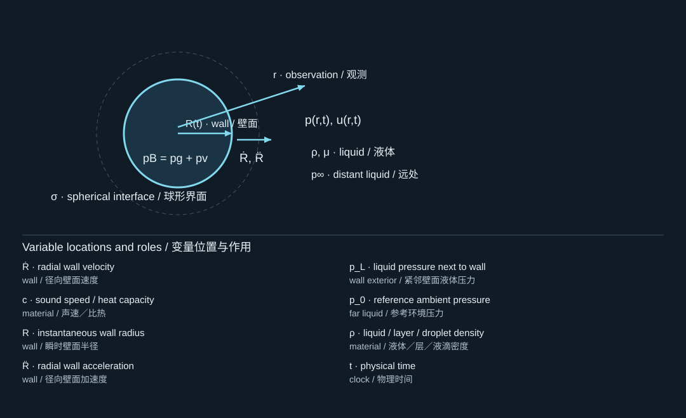
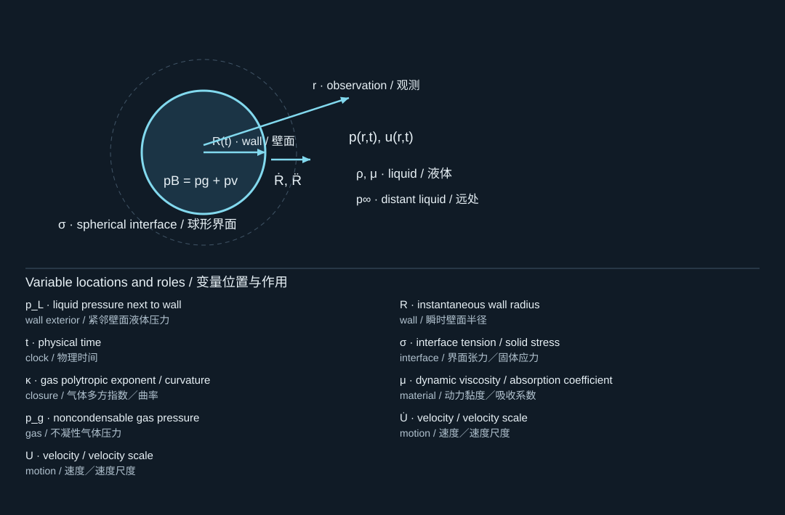
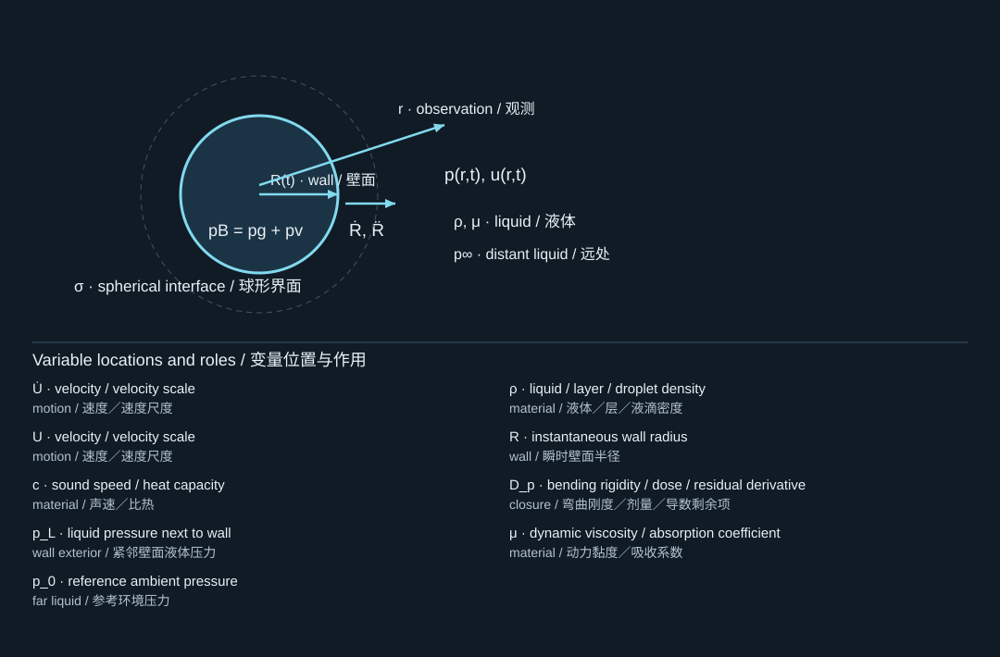
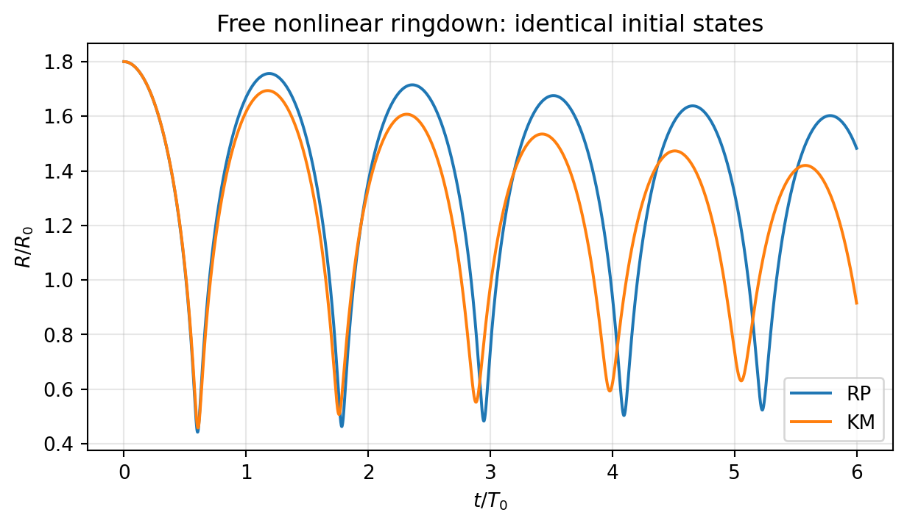
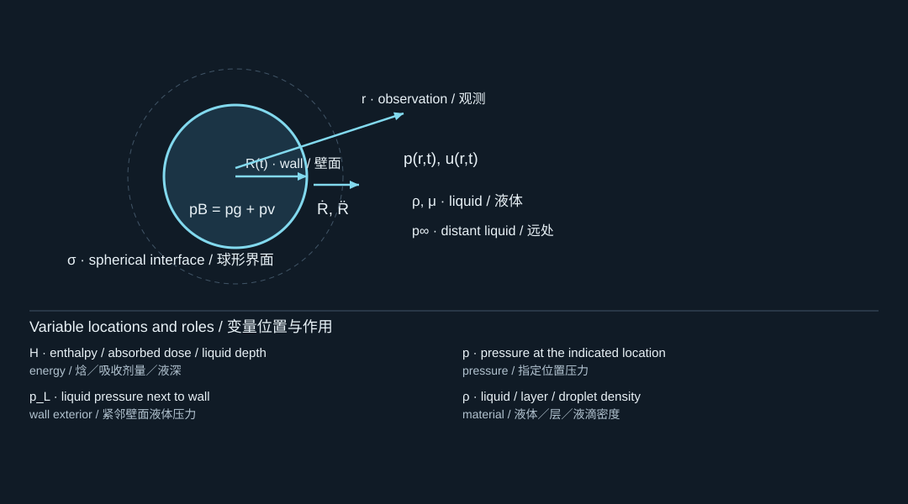
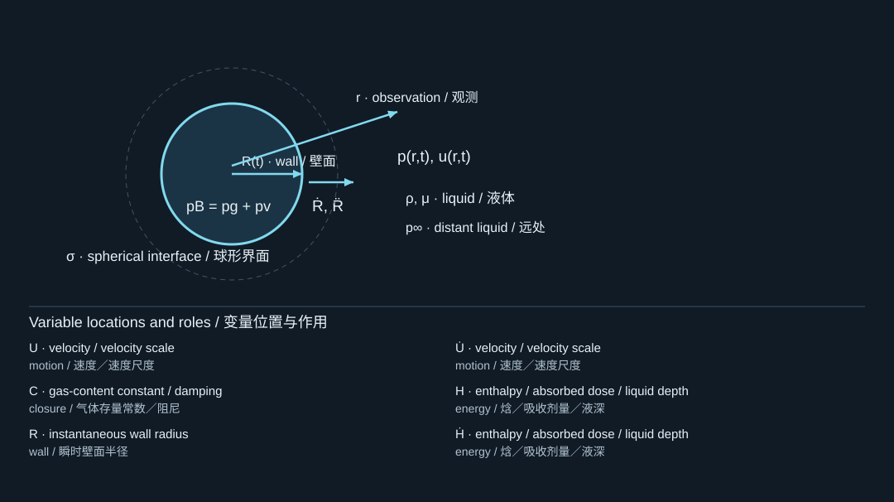
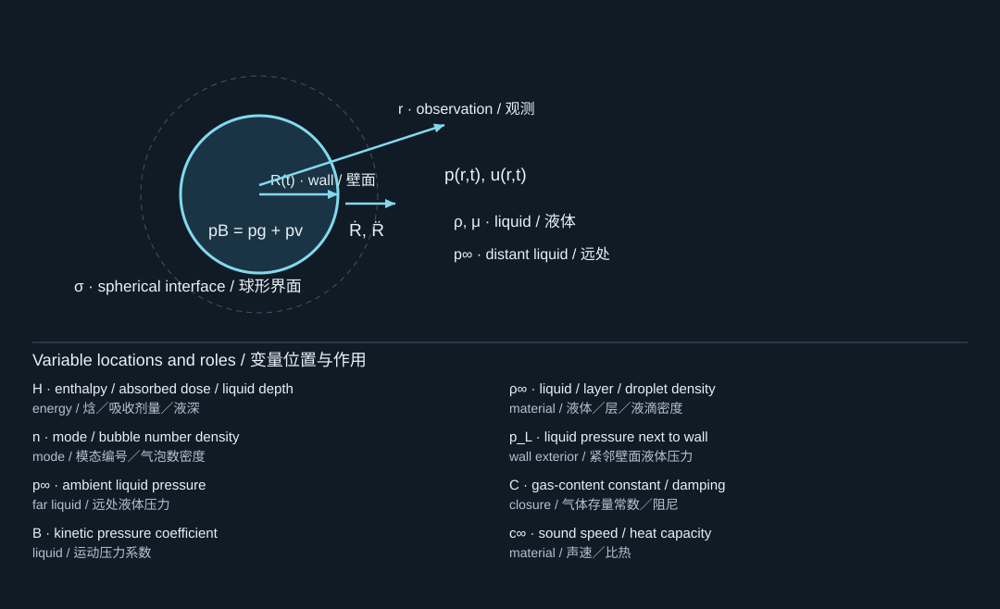
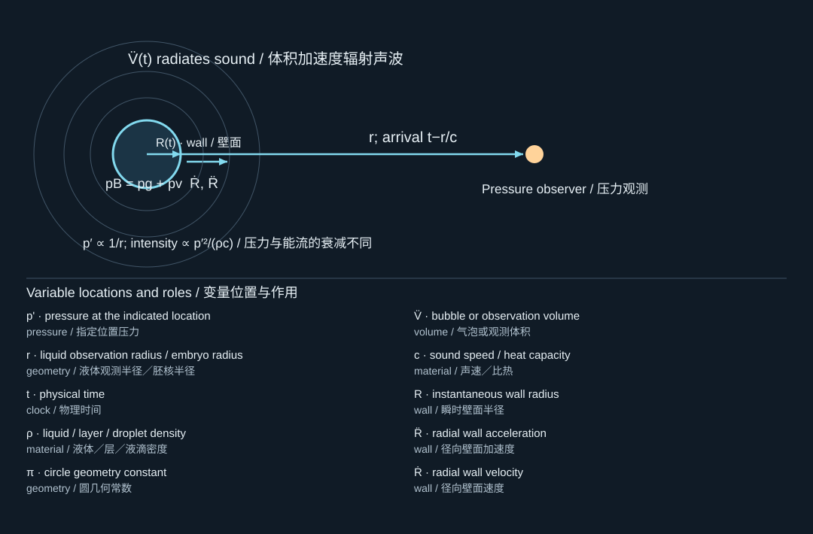
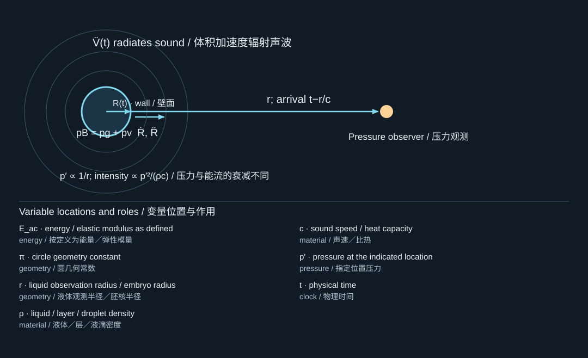
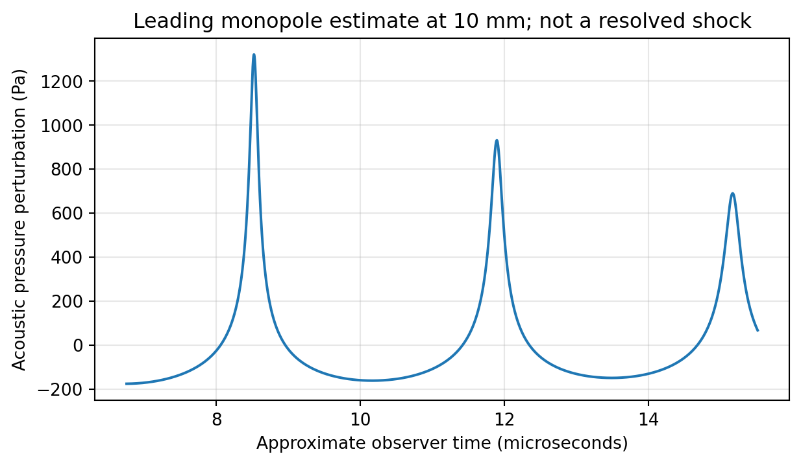

7. Compressibility, sound, and model limits
可压缩性、声辐射与模型极限
7.1 Two different small parameters
两个不同的小参数
The wall Mach number measures how fast the interface moves relative to sound. For harmonic forcing, compares bubble size with acoustic wavelength. A low wall speed does not automatically make a very high-frequency forcing field spatially uniform. Likewise, a bubble may spend most of its life at small but leave that regime during its final collapse. [S413, S409]
界面Mach数衡量界面运动相对于声速的快慢。对简谐激励，比较气泡尺寸与声波波长。界面速度较低，并不自动保证高频激励场在空间上均匀。同样，一个气泡可能在大部分寿命中保持较小，却在塌缩末期离开这一范围。[S413, S409]
A radial compressible equation can include outgoing acoustic energy while still treating the bubble as spherical. It does not thereby become a three-dimensional shock-resolving simulation. Model dimensionality, thermodynamic closure, and compressibility order are separate choices.
可压缩径向方程可以在保持球形假设的同时计入向外传播的声能，但这并不使它成为三维激波解析仿真。模型维度、热力学闭合和可压缩性近似阶次，是彼此不同的选择。
7.2 Keller–Miksis with constant ambient pressure
恒定环境压力下的Keller–Miksis方程
For the numerical laboratory we deliberately use a constant far-field pressure . One common first-order compressible form is
在数值实验中，我们有意采用恒定远场压力。一种常见的一阶可压缩形式为

The diagram locates the physical system; its key lists the symbols in the formula. Read the definition in the surrounding derivation when a letter has different roles.
图示标出物理体系，图例列出公式中的符号。若某字母有多种作用，应以邻近推导中的定义为准。
Here is the liquid-side interfacial pressure, not just gas pressure. As , equation (7.1) reduces to the incompressible radial equation. This limiting check is implemented in the supplied code. [S413]
这里是界面液侧压力，而不只是气体压力。当时，式(7.1)退化为不可压缩径向方程。配套代码实际执行了这一极限检查。[S413]
Published acoustically forced forms depend on the convention for the imposed incident pressure, its evaluation time, and retained asymptotic terms. The original Keller–Miksis derivation explicitly contains an incident-field timing convention. Do not take a forcing term from one convention and a pressure derivative from another. The laboratory avoids that ambiguity by implementing free ring-down at constant ; extending it to a measured acoustic waveform requires a deliberate derivation. [S413]
文献中受声激励形式的差异，与入射压力的定义、求值时刻及保留的渐近项有关。Keller–Miksis原始推导明确包含入射场的时间约定。不能从一种约定中取激励项，再从另一种约定中取压力导数。配套实验通过实现恒定下的自由衰减振荡来避免这种混用；要扩展至实测声压波形，必须重新明确推导约定。[S413]
7.3 Solving the implicit acceleration correctly
正确求解隐式加速度
Let . For constant , constant , and the polytropic gas law, differentiation gives
令。当和恒定，且气体满足多方定律时，求导得到

The diagram locates the physical system; its key lists the symbols in the formula. Read the definition in the surrounding derivation when a letter has different roles.
图示标出物理体系，图例列出公式中的符号。若某字母有多种作用，应以邻近推导中的定义为准。
The derivative contains the unknown acceleration. Omitting the last term is not the same model. Define as the first three terms in (7.2); then the explicit acceleration used in the code is
该导数中包含未知加速度。漏掉最后一项，就不再是同一个模型。将式(7.2)前三项记作，配套代码采用的显式加速度为

The diagram locates the physical system; its key lists the symbols in the formula. Read the definition in the surrounding derivation when a letter has different roles.
图示标出物理体系，图例列出公式中的符号。若某字母有多种作用，应以邻近推导中的定义为准。
This is a useful example of a general computational principle: when a constitutive quantity depends on velocity, its time derivative may contain acceleration. Symbolically rearrange the equation before passing it to an explicit right-hand-side function.
这说明了一个普遍计算原则：当某个本构量依赖速度时，其时间导数可能包含加速度。在将方程交给显式右端函数之前，应先完成符号整理。

Free ring-down from the same expanded initial radius under Rayleigh–Plesset and Keller–Miksis models. The difference includes radiation-related compressibility effects; the curves are teaching simulations.
相同膨胀初态下Rayleigh–Plesset与Keller–Miksis模型的自由衰减响应。差异包含与辐射相关的可压缩效应；图中为教学仿真。
7.4 Gilmore's enthalpy formulation
Gilmore的焓形式
For stronger compressibility, a liquid equation of state can replace the constant-density pressure difference with an enthalpy difference. Define
在更强可压缩条件下，可通过液体状态方程，用焓差替代恒密度压力差。定义

The diagram locates the physical system; its key lists the symbols in the formula. Read the definition in the surrounding derivation when a letter has different roles.
图示标出物理体系，图例列出公式中的符号。若某字母有多种作用，应以邻近推导中的定义为准。
A standard Gilmore form is
一种标准Gilmore形式为

The diagram locates the physical system; its key lists the symbols in the formula. Read the definition in the surrounding derivation when a letter has different roles.
图示标出物理体系，图例列出公式中的符号。若某字母有多种作用，应以邻近推导中的定义为准。
For a Tait-type liquid relation , with constant reference ambient state,
对于Tait类液体关系，在参考远场状态恒定时，

The diagram locates the physical system; its key lists the symbols in the formula. Read the definition in the surrounding derivation when a letter has different roles.
图示标出物理体系，图例列出公式中的符号。若某字母有多种作用，应以邻近推导中的定义为准。
The parameters and the valid pressure range must be appropriate to the liquid. The extensive laser-cavitation analysis in your collection uses an extended Gilmore framework and carefully treats initialization and energy partition. The existence of a more sophisticated radial model does not remove uncertainties in deposited energy, gas content, or phase change. [S409]
参数及其适用压力范围必须与具体液体相符。你提供的长篇激光空化分析采用扩展Gilmore框架，并仔细处理初始化与能量分配。更复杂的径向模型并不会自动消除沉积能量、气体含量或相变过程中的不确定性。[S409]
7.5 What the far-field pressure means
远场压力究竟表示什么
For a compact spherical source in a weakly nonlinear or linear far-field propagation approximation, the monopole pressure is
在紧致球形声源以及弱非线性或线性远场传播近似下，单极子声压为

The diagram locates the physical system; its key lists the symbols in the formula. Read the definition in the surrounding derivation when a letter has different roles.
图示标出物理体系，图例列出公式中的符号。若某字母有多种作用，应以邻近推导中的定义为准。
The observation distance is measured from the bubble center and must be in a suitable radiation region. A local wall-impact pressure cannot be obtained by putting a tiny into this far-field formula. Nor does equation (7.7) resolve shock steepening, attenuation, reflection, sensor averaging, or nonspherical jets.
观测距离从气泡中心量起，且必须位于适当的辐射区域。不能通过在远场公式中代入极小来获得局部壁面冲击压力。式(7.7)也不解析激波陡化、衰减、反射、传感器平均效应或非球形射流。
For a freely outgoing, approximately linear spherical wave, an acoustic-energy estimate is
对于自由向外传播、近似线性的球面波，声能估计为

The diagram locates the physical system; its key lists the symbols in the formula. Read the definition in the surrounding derivation when a letter has different roles.
图示标出物理体系，图例列出公式中的符号。若某字母有多种作用，应以邻近推导中的定义为准。
Use this only with its propagation assumptions. An arbitrary near-field pressure trace may include reactive rather than radiated energy. Your laser-bubble source [S409] is useful precisely because it distinguishes liquid compression, acoustic emission, and other energy channels rather than equating them all to .
使用该式时必须保留其传播假设。任意近场压力历程可能包含反应性储能，而不是纯辐射能量。你提供的激光气泡文献[S409]的重要价值，正是在于区分液体压缩、声发射及其他能量通道，而不是把它们都等同于。

Approximate monopole pressure calculated from the teaching Keller–Miksis trajectory at 10 mm. This is not a resolved collapse shock or wall-impact prediction.
由教学Keller–Miksis轨迹计算的10毫米处近似单极子声压。它不是解析得到的塌缩激波，也不是壁面冲击预测。
7.6 Stop before you manufacture a result
在制造伪结果之前停止
A solver can integrate beyond the validity of its model. The supplied laboratory uses a conservative teaching guard at and a finite minimum radius. The value 0.10 is a chosen warning threshold, not a universal accuracy boundary for Keller–Miksis. A stopped calculation is preferable to reporting a spurious pressure spike generated by an invalid extrapolation.
求解器可能在模型适用范围之外继续积分。配套数值实验在处设置保守教学保护，并设置有限最小半径。0.10是人为选择的警戒阈值，不是Keller–Miksis模型普适的精度分界线。与其报告无效外推产生的虚假压力尖峰，不如及时停止计算。
![Compressibility, sound and model limits · original governing laws; ṗ_L: pressure at the indicated location; D_p: bending rigidity / dose / residual derivative; μ: dynamic viscosity / absorption coefficient; R̈: radial wall acceleration; R: instantaneous wall radius; κ: gas polytropic exponent / curvature; p_g: noncondensable gas pressure; Ṙ: radial wall velocity; σ: interface tension / solid stress; D: bending rigidity / dose / residual derivative; c: sound speed / heat capacity; ρ: liquid / layer / droplet density](../../assets/curriculum-figures/formula-79e4f09400861fc9.svg)